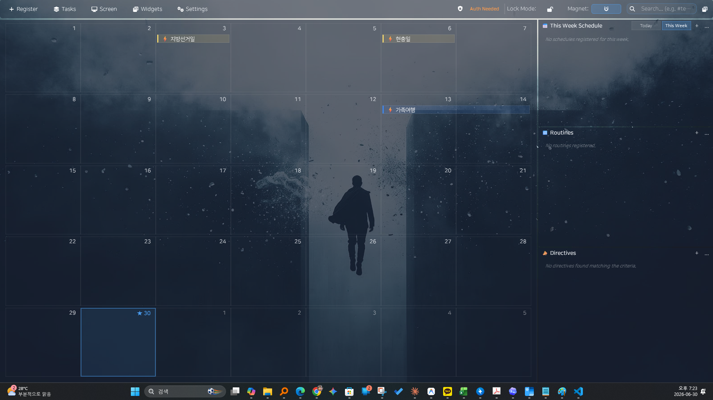

한눈에 펼치기
캘린더와 업무 패널을 한 화면에 모읍니다.
3.6.0 최신 버전 · GPLv3 오픈소스
오늘을 확인하고, 해야 할 일을 고르고, 바로 집중하세요.
캘린더, 루틴, 집중 타이머, D-Day 위젯을 원하는 위치에 배치하고 다시 켰을 때도 그대로 이어갑니다.
유료 앱 · 가격과 구매 조건은 Microsoft Store에서 확인할 수 있습니다.

Microsoft Store공식 스토어에서 간편 설치
GPLv3소스가 공개된 유료 프로그램
Local first기본 기능은 로컬 중심
Google Calendar필요할 때 계정 연결
Panel Freedom
캘린더는 크게, 업무 패널은 옆에, 위젯은 바탕화면 위에. Dark Calendar는 당신의 화면 배치를 따라갑니다.
캘린더와 업무 패널을 한 화면에 모읍니다.
일정이 중요한 날에는 캘린더를 더 크게 봅니다.
처리할 일이 많을 때는 실행 패널을 넓힙니다.
보조 모니터와 세로 화면에도 자연스럽게 배치합니다.
자주 보는 정보는 가까이 두고, 덜 중요한 정보는 접어둡니다.
업무, 회의, 집중 모드에 맞는 구성을 빠르게 되돌립니다.
One workspace
일정 관리와 실행 도구를 오가느라 흐름을 끊지 마세요. 필요한 정보와 행동을 한 데스크톱에 모읍니다.
월간 캘린더와 오늘 일정을 함께 보고 Google Calendar도 필요할 때 연결합니다.
반복 루틴과 실행 항목을 나누고, 선택한 작업을 집중 타이머로 이어갑니다.
D-Day, 시계, 날씨, 텍스트 위젯을 원하는 위치에 두고 배치를 복원합니다.
Screenshots
캘린더에서 위젯과 집중 모드까지, 자주 쓰는 흐름을 실제 제품 화면으로 살펴보세요.
main-dashboard.png

widget-manager.png

focus-mode.png
Visual Highlights
큰 흐름과 오늘의 일을 함께 봅니다.
시간, D-Day, 날씨를 계속 띄워둡니다.
긴 업무를 작은 세션으로 나눕니다.
Widgets
시계, D-Day, 카운트다운, 날씨, 텍스트를 바탕화면 위에 남깁니다.
Workflow
여러 앱을 옮겨 다니지 않고 오늘의 계획을 실제 행동으로 연결합니다.
캘린더와 오늘 일정을 한눈에 봅니다.
루틴과 실행 항목에서 지금 할 일을 고릅니다.
선택한 작업을 타이머와 함께 시작합니다.
Details
캘린더와 업무 흐름을 한 화면에 둡니다.
D-Day와 카운트다운을 늘 보이는 곳에 둡니다.
회의, 집중, 검토에 맞춰 레이아웃을 전환합니다.
For Users
회의, 마감, 반복 업무를 함께 보는 사용자
외부 일정도 데스크톱에서 보고 싶은 사용자
D-Day와 시계를 가까이에 두고 싶은 사용자
작업을 고르고 집중 시간을 남기는 사용자
Trust & requirements
Open source
Dark Calendar v3.6.0은 GNU General Public License v3.0으로 배포됩니다. Microsoft Store는 편리한 설치·업데이트 경로를 제공하고, GitHub는 같은 버전의 전체 대응 소스와 빌드 안내를 제공합니다.
현재 배포 버전과 같은 태그의 전체 대응 소스를 GitHub에서 제공합니다.
버전별 소스 보기복제·수정·재배포 조건과 사용자 권리는 GPLv3 전문에서 확인할 수 있습니다.
라이선스 전문 보기PyQt6, Qt와 기타 라이브러리의 라이선스 및 고지 사항을 함께 제공합니다.
제3자 고지 보기Microsoft Store 구매는 앱 설치·업데이트 경로를 제공하며, GPLv3에 따른 소스 접근 권리를 제한하지 않습니다.
FAQ
Dark Calendar는 Windows 데스크톱 환경에 맞춰 설계되었습니다. Microsoft Store의 시스템 요구 사항에서 현재 지원 버전을 확인할 수 있습니다.
아닙니다. 기본 기능은 로컬 중심으로 사용할 수 있고, 외부 일정이 필요할 때만 Google 계정을 연결하면 됩니다.
저장한 위젯과 레이아웃은 앱을 다시 시작한 뒤에도 복원할 수 있습니다.
공식 Microsoft Store 페이지에서 설치할 수 있습니다.
GPLv3는 상업적 판매를 허용합니다. Microsoft Store 구매는 간편한 설치와 업데이트 경로를 제공하며, 소스 코드 확인·수정·재배포 권리는 GPLv3 조건에 따라 그대로 유지됩니다.
이 프로젝트는 PyQt6의 GPLv3 배포판을 사용하며, Dark Calendar 전체 대응 소스를 GPLv3로 공개합니다. Qt와 다른 구성요소의 개별 조건은 제3자 고지에서 확인할 수 있습니다.
GPS는 사용하지 않습니다. 입력한 도시명은 포함된 GeoNames 데이터에서 로컬로 검색하고, 날씨 조회 시 좌표와 일반적인 웹 요청 정보가 MET Norway에 전달될 수 있습니다. 자세한 내용은 개인정보처리방침에서 확인하세요.
Start today
Dark Calendar는 유료 앱입니다. 공식 Microsoft Store에서 가격, 구매 조건과 설치 방법을 확인하세요.